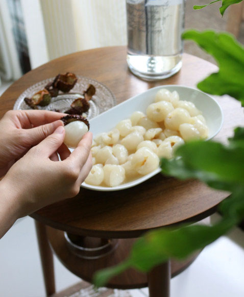
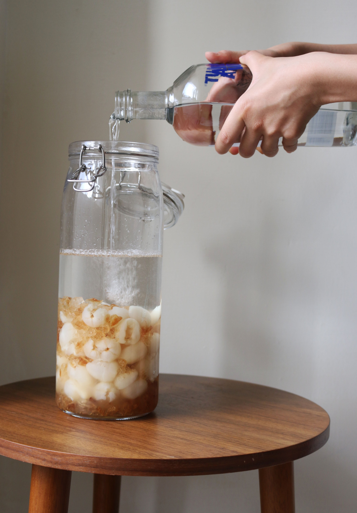

夏天到來的時候，雖然暑氣難耐、氣候潮濕，卻也盛產許多水果，讓人對夏天多了份期待。
夏天到來的時候，雖然暑氣難耐、氣候潮濕，
卻也盛產許多水果，讓人對夏天多了份期待。
說到屬於夏天的水果，除了芒果之外，最讓我期待的就是荔枝，一小顆翠白的果實，嚐起來多汁、甜而不膩口，而且有玉荷包、黑葉、糯米荔枝不同的品種依序成熟。但每當忍不住一顆接一顆吃的時候，總想起小時候因為吃太多荔枝而流鼻血的故事，而收斂許多。
因為貪戀著荔枝的滋味，而想盡辦法延後它的保存期限，用報紙包覆冷藏、浸泡鹽水後冷藏、剝殼後冷凍，但即使這樣也只能將時間往後延一至兩個禮拜。於是想到可以將荔枝泡成酒，即使過了荔枝的產季，仍然可以品嚐到荔枝的滋味。等待三個月的釀製，到了秋天的時候開瓶，搭配微涼的天氣飲用，剛剛好。
span span
